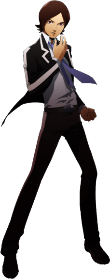
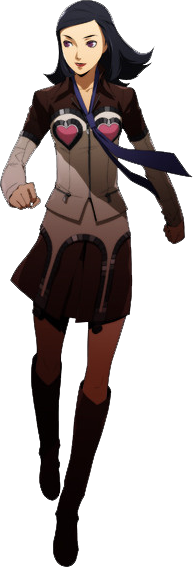
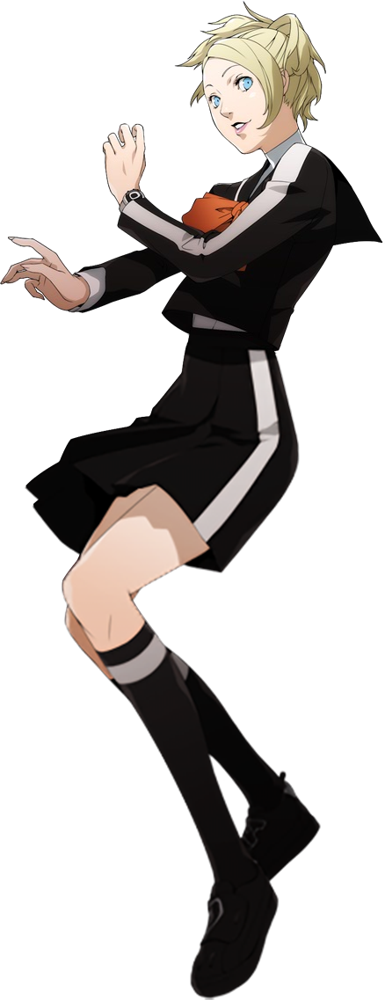
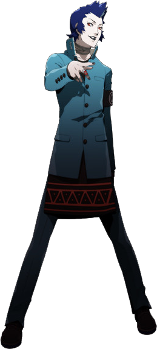
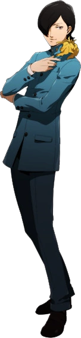

| Persona 2: Innocent Sin | |
|---|---|

|
|
| Nome original: | ペルソナ２ 罪 |
| Ano de lançamento: | 1999 no Japão e 2011 no Ocidente |
| Plataforma(s): | PlayStation e PlayStation Portable |
Persona 2: Innocent Sin
Persona 2: Innocent Sin, conhecido como Persona 2: Pecado no Japão, é o segundo jogo da série Persona para PlayStation. Inocente Sin é seguido por Persona 2: Eternal Punishment, que juntos, criam uma única história.
Innocent Sin foca no protagonista Tatsuya Suou lidando com rumores em sua cidade se tornando realidade, devido ao Joker. Ao longo do caminho, Tatsuya e seus amigos devem lutar contra o Joker e descobrir sua identidade, bem como proteger sua cidade da segunda vinda de Hitler e seu exército de robôs nazistas conhecidos como o Último Batalhão.
| Contents |
|---|
1. Plot
Persona 2: Innocent Sin começa três anos após os eventos do primeiro Persona, em 1999. O local é Sumaru, uma grande área metropolitana fictícia situada no Japão moderno. Sumaru acaba sendo amaldiçoada após eventos durante o início do jogo que fazem com que qualquer boato que se espalhe o suficiente torne-se realidade.
O protagonista silencioso do jogo é Tatsuya Suou. Tatsuya é arrastado para a trama por Lisa Silverman, uma colega que o idolatra, quando o conflito entre a Escola Secundária Seven Sisters (Sevens) e a Escola Secundária Kasugayama (Cuss High) começa. Os dois encontram Eikichi Mishina, o autoproclamado chefe de Cuss High. Depois de entrarem em uma briga, os três jogam um jogo de invocação do Joker, um misterioso antagonista que rumores dizem que aparecerá ante qualquer um que o chame. Qualquer um que falhe em contar seus desejos a Joker, seja porque não tem um ou se recusa a contar a ele, tem sua "energia ideal" roubada, reduzindo-os a conchas sem ambição chamadas Shadow Selves. Uma vez invocado, Joker afirma que os três alunos fizeram algo terrível com ele no passado e fica furioso quando eles não o reconhecem. Jurando vingança e empunhando uma estranha Caveira de Cristal, ele parte, deixando o trio confuso e atrás de aprender mais sobre ele. Mais tarde, eles fazem questão de dizer que Tatsuya e o Joker são parecidos.
2. Personagens





